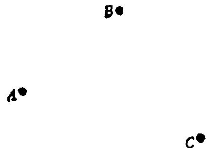
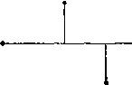

看着未知数!试想出一个具有相同或相似未知数的熟悉问题。这是建议你
从未知数开始进行工作。
看着已知数!你能从已知数导出什么有用的东西吗?这是建议你从已知数
开始进行工作。
通常，从未知数开始论证似乎更为可取(参见“帕扑斯”和“倒着干”这
两节)。但另一种起步方法是从已知数开始，也有成功的可能，也必须常常试试，
并值得加以说明。
例子：给定三点 A ， B ， C 。过 A 作一线与 B ， C 等距离。
已知是什么?给定三点 A ， B ， C 的位置。我们画一张图，表示已知的事项(图
13)。
图13
未知是什么?一条直线。
条件是什么?所求直线过 A ，且与 B ， C 等距离。我们把未知事项与已知事项
放在一张图中，表示出所需要的关系(图14)。根据点到直线距离的定义，图14
上表示出了定义中所包含的直角。
这样画出的图未免太“空旷”。把未知的直线与已知的 A ， B， C 相连结，
看来不能令人满意。图14需要某条辅助线，还要加点什么——但是要加什么呢?
一个高水平的学生对此也可能一筹莫展。当然，有各种办法可试，但帮助学生
精神重新振作起来的最好问题是：你能从已知事项导出什么有用的东西?
图14
实际上，已知是什么?就是图13中表示的三个点，再没有别的了。我们迄
今尚未充分利用过点 B 和 C ；我们必须从它们导出什么有用的东西。但是只有两
个点，你能做什么呢?把它们用一条直线连起来。这样，我们就画出图15。